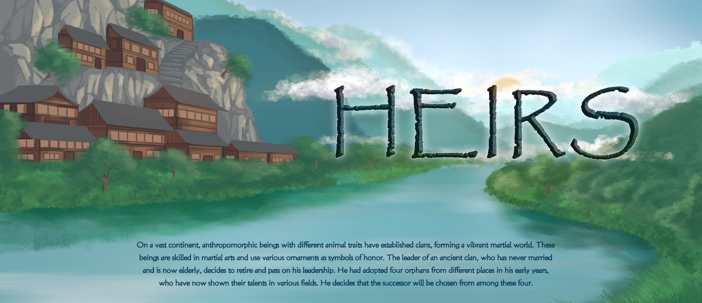
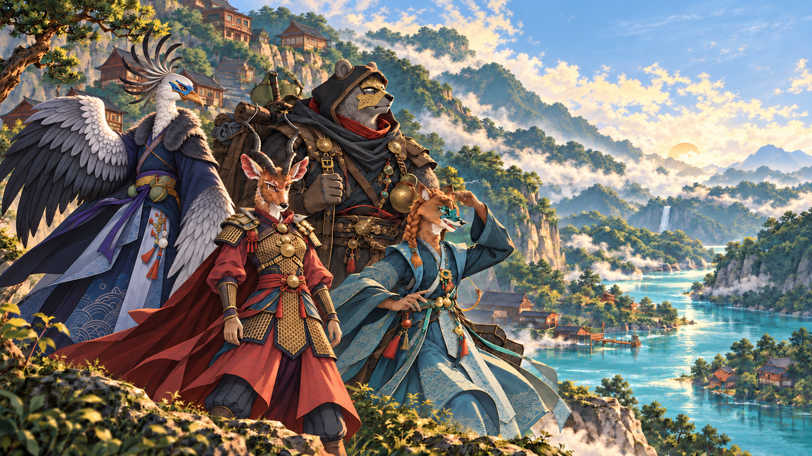
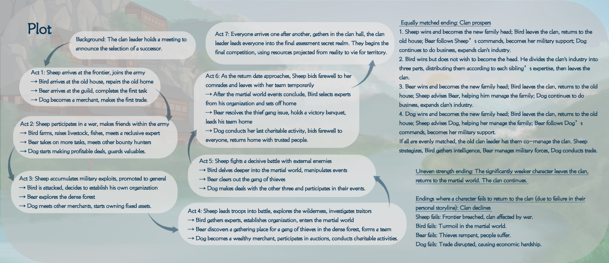
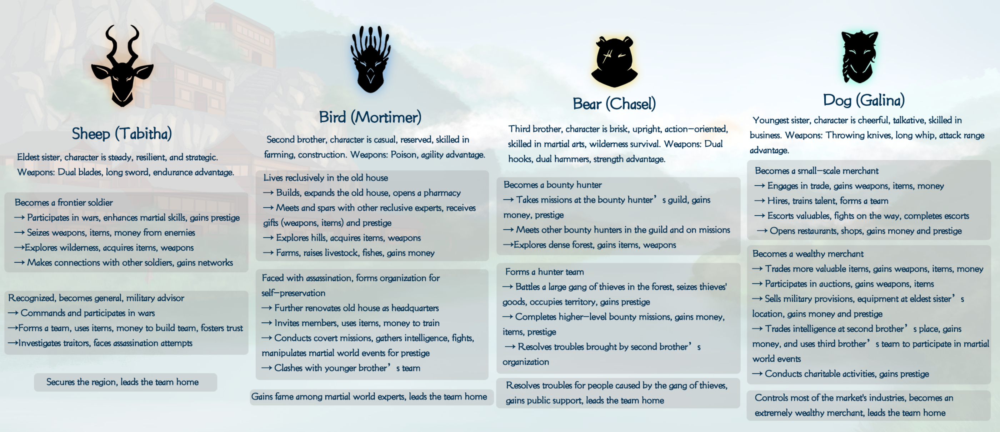
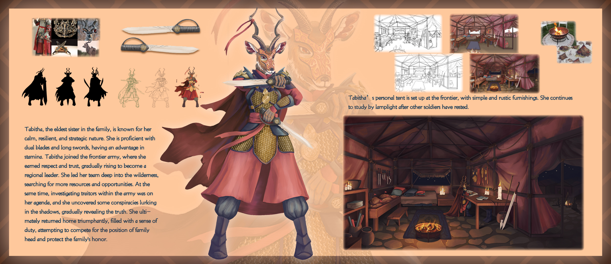
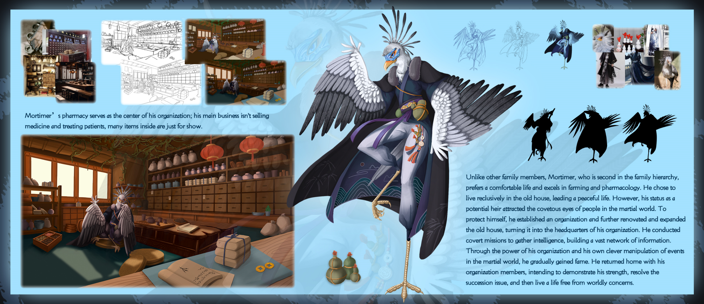
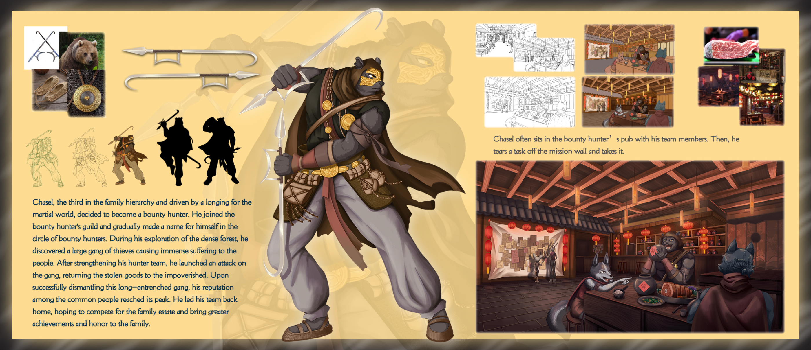
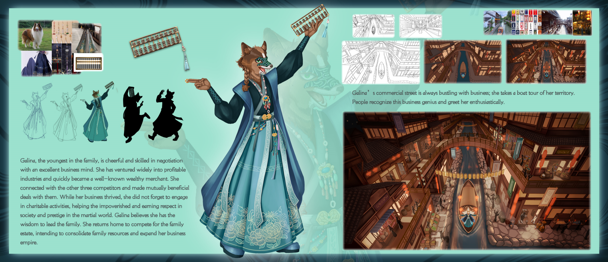

中文译文
四位兄妹 · 一个继承席位辽阔大陆上，带有不同动物特征的族群建立氏族，形成繁盛的武林世界。
族人习武，并以各式佩饰象征荣誉。一位古老氏族的首领终身未娶，如今年事已高，决定退位并交出领导权。早年，他从不同地方收养了四名孤儿；如今四人已在各自领域展现才干，族长决定从他们之中选出继承者。
一个以氏族继承为核心的东方奇幻故事。年迈的族长宣布遴选继承人，四位自幼被收养的兄妹分别走向军旅、隐居、狩猎与经商之路；他们在成长中建立声望，也逐渐卷入家族权力与武林秩序的交汇。


辽阔大陆上，带有不同动物特征的族群建立氏族，形成繁盛的武林世界。
族人习武，并以各式佩饰象征荣誉。一位古老氏族的首领终身未娶，如今年事已高，决定退位并交出领导权。早年，他从不同地方收养了四名孤儿；如今四人已在各自领域展现才干，族长决定从他们之中选出继承者。

Tabitha 胜出后成为新任族长，Bird 离族归隐旧宅，Bear 按她的部署成为军事辅佐，Dog 继续经商并拓展氏族产业。
Bird 胜出后将产业按兄妹专长分配，随后离开氏族；Bear 胜出后由 Bird 协助治理、Sheep 提供谋划；Dog 胜出后由 Sheep 协助管理、Bear 负责军事支持。其余成员各司其职，氏族延续发展。
若四人实力相近，老族长会安排四人共同治理：Sheep 负责统筹，Bird 汇集情报，Bear 管理军事，Dog 拓展贸易。
明显落后的角色将离开氏族，返回武林；氏族则继续延续。若某位角色未能完成个人主线，氏族可能走向衰落：Sheep 失败会令边境失守、氏族受战事波及；Bird 失败会使武林局势动荡；Bear 失败会令盗匪横行、民众受苦；Dog 失败则会导致贸易受阻与经济困顿。

长女，沉稳、坚韧而善于谋划。擅用双刃与长剑，耐力出众。她投身边境军队，在战事中累积声望并晋升将领；回乡后希望竞逐族长之位，守护家族荣誉。
次子，随和而内敛，擅长耕作与建造。以毒术与敏捷见长，偏爱旧宅的隐居生活，并经营药铺。遭遇刺杀后，他建立组织、搜集情报，借由谋略影响武林局势。
三子，爽直、正派且行动力强，精于武艺与野外生存。惯用双钩、双锤，以力量取胜。他成为赏金猎人并组建团队，最终清剿盗匪、帮助受害民众，带领同伴返乡参与继承之争。
幺女，开朗健谈，拥有出色的商业头脑。擅长投掷飞刀与长鞭，借由贸易、雇佣人才、护送任务及经营商铺不断拓展事业，成为富商后回乡角逐家族产业。

Tabitha 是家中长女，以冷静、坚韧和善于谋略著称。她精通双刃与长剑，拥有出色耐力。加入边境军后，她逐渐赢得尊重与信任，晋升为地区领袖，带队深入荒野寻找资源与机会；同时调查军中叛徒，在暗处揭开阴谋。
她的个人营帐设于边境，陈设简朴而实用。其他士兵休息后，她仍在灯下继续研读与筹划。最终，Tabitha 带着责任感与对家族荣誉的坚持回乡参选。

Mortimer 是家中次子，偏爱安逸生活，擅长耕作、制药与建造。他选择在旧宅低调生活，并扩建宅院、开设药铺。药铺是其组织的据点，但核心经营并非售药或诊疗，陈列的许多物品主要用于营造场景。
潜在继承人的身份使他成为武林势力觊觎的目标。为保护自身，他创立组织并将旧宅改造为总部，通过隐秘行动收集情报、建立人脉，逐渐在武林中声名鹊起。返乡时，他与成员同行，希望解决继承问题后回归平静生活。

Chasel 是家中排行第三的兄长，性格爽快正直，渴望进入武林闯荡。他加入赏金猎人公会，在密林探索时发现一个令百姓深受其害的大型盗匪团伙。集结猎手团队后，他发动突袭，夺回赃物并归还贫困居民。
他常与团队成员聚在赏金酒馆，从任务墙揭取委托。清除盘踞已久的盗匪后，Chasel 在民间声望达到高点，带队返乡竞逐家族产业，希望为家族带来更大的成就与荣誉。

Galina 是家中幺女，开朗善谈，精于谈判，拥有敏锐的商业头脑。她涉足多个获利行业，很快成为知名富商；在与其他竞争者建立联系、达成互利交易的同时，也持续参与慈善，帮助贫困民众，赢得社会尊重与武林声望。
她相信自己具备领导家族的能力，因此返乡争取继承权，希望整合家族资源、扩张商业版图。她的商业街始终繁忙兴盛，沿河乘船巡察领地时，民众会热情致意。